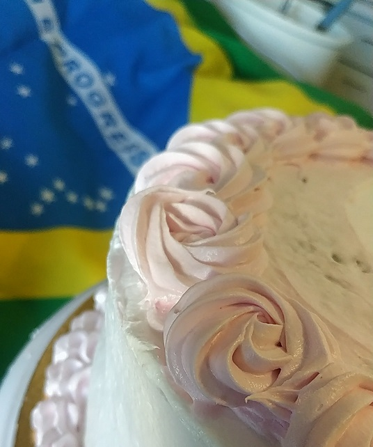
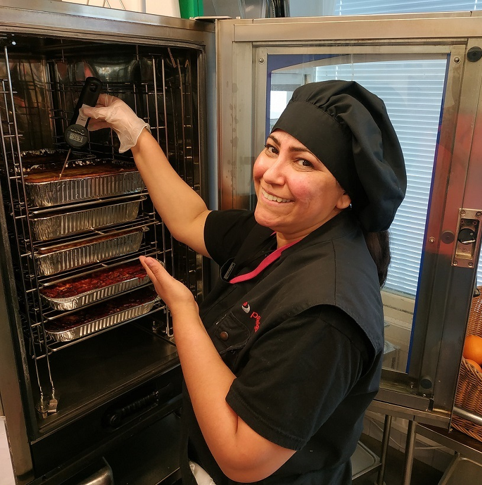

Comidas e Sabores

Muito prazer! Eu me chamo Elaisa, mais conhecida como Dona Moça ou, simplesmente, Flor. O Comidas e Sabores da Flor é o resultado de uma receita com dois ingredientes principais: a satisfação que encontro em cozinhar e o orgulho das minhas origens brasileiras e cariocas.
Cozinhar sempre me despertou a curiosidade e me trouxe um enorme prazer. Depois de morar no Brasil e na Itália, em 2005 vim para a Finlândia, e não tive dúvidas da profissão que iria seguir. Durante os anos da escola profissional, fui unindo as técnicas aprendidas à experimentação de novas receitas em casa.
Sempre vi a cozinha como um grande laboratório, onde cada prato é inigualável e uma oportunidade de expressão da minha identidade. Por volta de 2016, o que havia começado apenas servindo família e amigos, se transformou num propósito maior, o de proporcionar à comunidade brasileira na capital finlandesa os sabores da terra natal.
Atualmente, o Comidas e Sabores da Flor continua se desenvolvendo a cada encomenda. Os meus clientes – que carinhosamente chamo de Flor’mores – são servidos com o mesmo amor e dedicação com os que sirvo a minha própria família. Além das refeições brasileiras, que são a minha marca registrada, recentemente comecei a me aventurar na confeitaria, devido a pedidos.
A confeitaria é uma vertente que adoro e em que me autoeduco constantemente. Nessa área, me inspira saber que sou a única neta a seguir os passos do meu falecido avô, que foi chef na Confeitaria Colombo, no Rio de Janeiro.
Para mim, cozinhar é sinônimo de afeto e, por isso, prefiro seguir a minha intuição do que reproduzir receitas prontas. Algo que me dá gosto é corresponder aos desafios lançados pelos amigos e clientes. Por isso, também experimento na culinária italiana, tailandesa, indiana e finlandesa.
Hoje, me sinto uma pessoa muito realizada. Tenho clientes brasileiros assíduos, assim como de outras nacionalidades, interessados nos sabores do meus país. Moro com o meu marido, italiano, e o meu filho pré-adolescente em Helsinque, e não trocaria essa realidade por nada nesse mundo.
Ainda tenho o sonho de transformar o Comidas e Sabores da Flor no meu próprio estabelecimento e servir os meus clientes não só com uma comida deliciosa, mas com um bom papo, regado a risadas e descontração!